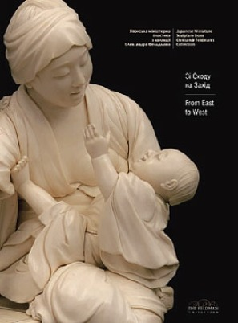
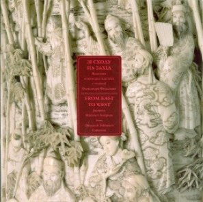

Наши издания
Собрание западного искусства Feldman Family Museum включает почти 520 произведений живописи, графики и скульптуры, а также некоторых видов декоративно-прикладного искусства разных стран Европы.

Улыбка богов: японская миниатюрная пластика
Девочка в интерьере мастерской
Франция (École de Paris)
1950 гг.


Зі Сходу на Захід: японська мініатюрна пластика з колекції Олександра Фельдмана
Холодна зброя Сходу з колекції Олександра Фельдмана